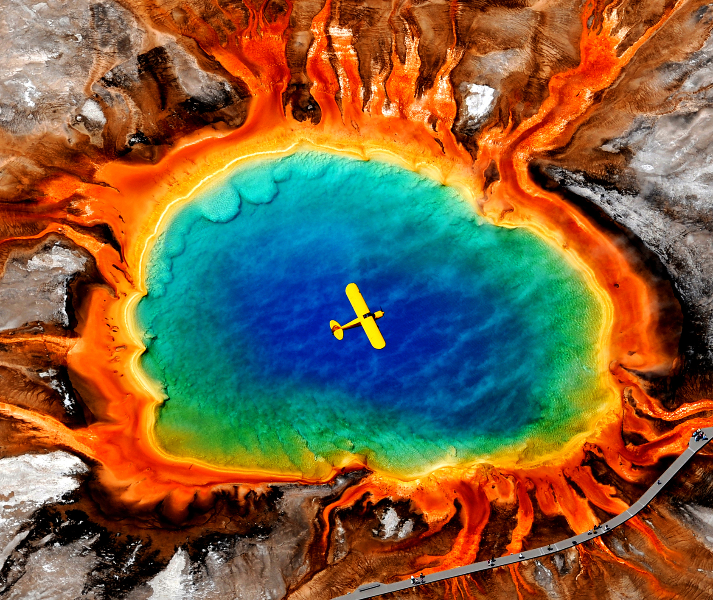
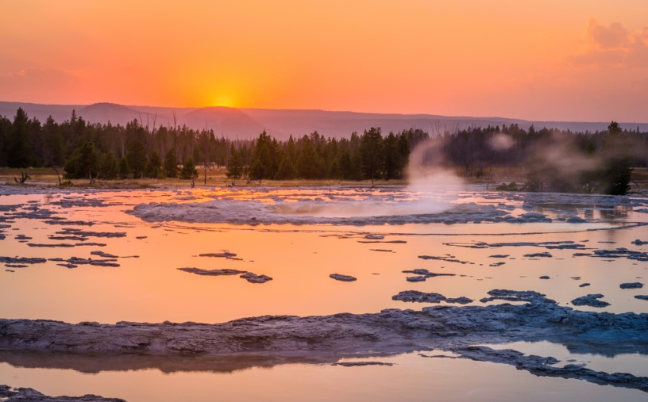

Grand Prismatic Spring
Grand Prismatic Spring is 370 feet in diameter and 121 feet deep. The spring has many colors around the rim including yellow, orange, and green that are due to the bacteria living in the beautiful blue water. There is a boardwalk along the edge of the spring, as well as a short hike to a higher, more expansive view of the spring. Every minute the spring releases about 560 gallons of water around 160 degrees. Grand Prismatic is the largest hot spring in the United States and the most photographed feature in Yellowstone National Park.

While you visit Grand Prismatic, explore the other geyser basins as well. Midway, Upper, and Lower Geyser Basin all have numerous geysers and pools to visit, and they are all located within a short drive of each other. If your timing is right, you might just catch an eruption of one of the many geysers throughout the basins.